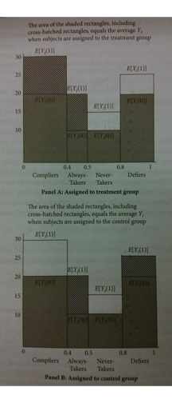
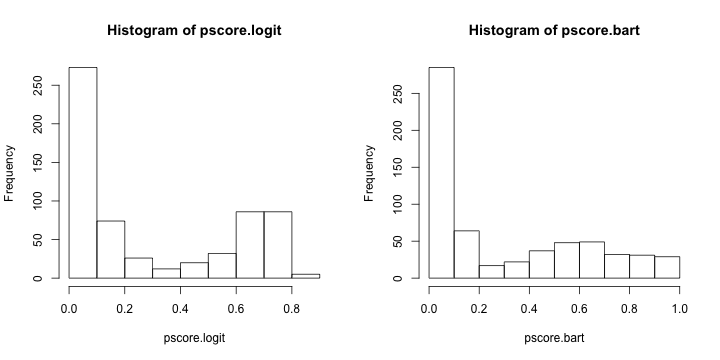
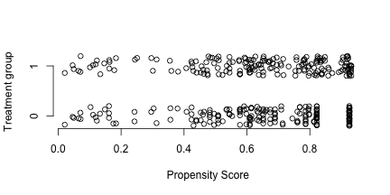

Matching
Drew Dimmery drewd at nyu dot edu
February 28, 2014
Structure
Homework
IPW and Sampling
Matching
Nearest Neighbor
Mahalanobis distance
Genetic Matching
CEM
Beyond Matching
Homework
[C]onsider a stratified estimator that controls for \(Z_i\) by
partitioning the sample by values of \(Z_i\) , then
taking the difference in treated and control means within each of these strata, and then
combining these stratum-specific estimates with a weighted average, where we weight each stratum contribution by the share of the \(P\) in each stratum
Notation and Setup
So we consider the following two expectations:
\(E[Y_i(1) - Y_i(0) | Z_i = 1]\) weighted by \(p_Z = P(Z_i = 1)\) \(E[Y_i(1) - Y_i(0) | Z_i = 0]\) weighted by \(1-p_Z\)
Then we want the weighted sum to be \(E[Y_i(1) - Y_i(0)]\)
Homework: Is this possible?
The kink
We do not observe principal Strata (counterfactual treatments)
But we still need to think about them.
If you talked about them on the homework, you were probably on the right track.
Decompose to Principal Strata
Within the stratum \(Z=1\) , we have the following:
\(p_{comp} = P(D_i(1)-D_i(0)=1)\) \(p_{NT} = P(D_i(1)=D_i(0)=0)\) \(p_{AT} = P(D_i(1)=D_i(0)=1)\) \(p_{def} = P(D_i(1)-D_i(0)=-1) =0\)
And these probabilities are equal (in expectation) across strata defined by \(Z\) due to random assignment
Principal Strata TEs
Each principal strata may have its own conditional average treatment effect
\(\rho_{comp} = E[Y_i(1) - Y_i(0) | D_i(1)-D_i(0)=1]\) \(\rho_{NT} = E[Y_i(1) - Y_i(0) | D_i(1)=D_i(0)=0]\) \(\rho_{AT} = E[Y_i(1) - Y_i(0) | D_i(1)=D_i(0)=1]\) \(\rho_{def} = E[Y_i(1) - Y_i(0) | D_i(1)-D_i(0)=-1]\)
We don’t assume anything about these effects.
Also note that these are equal across strata in \(Z\) due to random assignment of \(Z\) .
Counterfactuals and Principal Strata
But those effects assume counterfactual conditions in treatment that we don’t observe.
For instance, for never takers:
\(E[Y_i(D_i(1)) - Y_i(D_i(0)) | D_i(1)=D_i(0)=0]\) This observed quantity may be simplified:\(E[Y_i(0) - Y_i(0) | D_i(1)=D_i(0)=0]\)
Which is equal to zero.
The same is true for always takers.
This isn’t to say that Always-Takers wouldn’t be affected by treatment: just that we never see them affected by treatment.
Complier TEs
This is not the case for compliers, though.
\(E[Y_i(D_i(1)) - Y_i(D_i(0)) | D_i(1)-D_i(0)=1]\) This can be similar simplified to:
\(E[Y_i(1) - Y_i(0) | D_i(1)-D_i(0)=1]\)
And we’ve assumed that there are no defiers.
Intention to Treat Effect
This part isn’t necessary to fully grok, yet.
This shows what we can get with a simple difference in means:
\(ITT = E[Y_i(D_i(1))] - E[Y_i(D_i(0))]\) \(ITT = E[Y_i(D_i(1)) - Y_i(D_i(0)) | D_i(1)=D_i(0)=0] \times p_{NT} +\) \(E[Y_i(D_i(1)) - Y_i(D_i(0)) | D_i(1)=D_i(0)=1] \times p_{AT} +\) \(E[Y_i(D_i(1)) - Y_i(D_i(0)) | D_i(1)-D_i(0)=1]\times p_{comp} +\) \(E[Y_i(D_i(1)) - Y_i(D_i(0)) | D_i(1)-D_i(0)=-1]\times p_{def}\)
Taking into account some things we know (observed effects of AT & NT is zero, \(p_{def}=0\) ):
\(ITT = E[Y_i(1) - Y_i(0) | D_i(1)-D_i(0)=1]\times p_{comp}\) We’re close, now!
We just need to think about \(p_{comp}\) .
Intention to Treat Effect (on D)
Given what we know, we can look at the following:
\(ITT_D = E[D_i(1) - D_i(0)] =\) \(E[D_i(1) - D_i(0) | D_i(1)=D_i(0)=0] p_{NT} +\) \(E[D_i(1) - D_i(0) | D_i(1)=D_i(0)=1] p_{AT} +\) \(E[D_i(1) - D_i(0) | D_i(1)-D_i(0)=1] p_{comp} +\) \(E[D_i(1) - D_i(0) | D_i(1)-D_i(0)=-1] p_{def}\) Or simply:
\(ITT_D = 1 \times p_{comp}\) Which is what we want.
And finally
The observed difference in treatment across \(Z\) gives us \(p_{comp}\) .
So we can simply take \(\frac{ITT}{ITT_D} = E[Y_i(1) - Y_i(0) | D_i(1)-D_i(0)=1]\)
This is a LATE (Local Average Treatment Effect) or CACE (Complier Average Causal Effect) depending on who is talking about it.
It’s the best we can do in the case of non-compliance like this. (More on this stuff later in the semester)
Back to the homework!
But the homework had even more significant issues, as we were looking WITHIN strata.
This essentially gets rid of the benefits of randomization.
To get a good estimate for the population using this method, we have to get a good estimate WITHIN each strata, too.
In other words, we must be able to recover \(E[Y_i(1)-Y_i(0)|Z=1]\) and vice versa within each strata. This would allow:
\(E[Y_i(1)-Y_i(0)|Z=0] (1-p_Z) + E[Y_i(1)-Y_i(0)|Z=1] p_Z\)
But can we get that?
No. Not even a little bit.
What’s in a strata?
For \(Z=0\) , and our three principal strata, we have:
Always Takers will be \(D_i=1\)
Never takers will be \(D_i=0\)
Compliers will be \(D_i=0\)
So we can decompose the difference in means is as follows:
\(E[Y_i(1)|Z=0] - E[Y_i(0)|Z=0] = E[Y_i(1) | D_i(1)=D_i(0)=1]-\) \(E[Y_i(0)|D_i(1) - D_i(0)=1] [\frac{p_{comp}}{p_{NT} + p_{comp}}]-\) \(E[Y_i(0)|D_i(1) = D_i(0)=0] \frac{p_{NT}}{p_{NT} + p_{comp}}\)
The key point is that these counterfactuals are not the ones we want.
Even if they were, we still wouldn’t know what we were estimating without knowing proportions in each strata (which we wouldn’t).
For this to equal \(E[Y_i(1) -Y_i(0)|Z=0]\) , we would need to make some strong assumptions directly on the potential outcomes.
What sort of assumptions work?
If complier and never taker proportions are equal, then we get:
\(E[Y_i(1) | D_i(1)=D_i(0)=1]-\) \({1\over 2} E[Y_i(0) | D_i(1)-D_i(0)=1] + {1\over 2} E[Y_i(0) | D_i(1)=D_i(0)=0]\) This isn’t enough.
The assumption we’d need would be on the equality of potential outcomes across all principal strata (ludicrously strong):
\(E[Y_i(1)|D_i(1)=D_i(0)=1] = E[Y_i(1)|D_i(1)=D_i(0)=0] =\) \(E[Y_i(1)|D_i(1)-D_i(0)=1] = E[Y_i(1)]\) And \(E[Y_i(0)|D_i(1)=D_i(0)=1] = E[Y_i(0)|D_i(1)=D_i(0)=0] =\) \(E[Y_i(0)|D_i(1)-D_i(0)=1] = E[Y_i(0)]\)
(Since we randomized over \(Z_i\) , it doesn’t help us to only assume this only in strata of \(Z_i\) )
This WOULD allow us to get at the common causal effect. (But at what cost?)
For all practical purposes, this estimation strategy is DOUBLY not identified.
Graphically

This is a ridiculous amount of regularity to assume, though.
Example
What if we had all the data? (- Don Rubin)
Assume a balanced design \(p_Z = {1\over 2}\) and constant TE \(\rho = 20\) , with expected potential outcomes as follows:
Always-taker
10
30
20%
Never-taker
0
20
30%
Complier
65
85
50%
More Example
The given estimator will target the following parameter (using the decomposition from before):
\(Y_1\) \(85\cdot {.2 \over .7} + 30 \cdot {.2 \over .7}\)
69.28630
\(Y_0\) \(65\cdot {.5\over .8}\)
040.625
\(\rho\) 69.286 -10.625
This setup gives an estimand of \(29.33\) . This is not the ATE (20).
That is, we’ve derived the population estimand under this stratified estimator.
And we already assumed a lot of common issues away (balanced design, constant effects)
If we knew population sizes within principal strata, would this help?
Matching Big Picture
ahem -
MATCHING IS NOT AN IDENTIFICATION STRATEGY.
Heckman, Ichimura, Smith and Todd (1998) provide a nice decomposition:
\(B = \int_{S_{1X}} E[Y_0|X, D=1] dF(X|D=1) -\) \(\int_{S_{0X}} E[Y_0 | X, D=0] dF(X|D=0)\) \(B = B_1 + B_2 + B_3\) \(B_1 = \int_{S_{1X} \setminus S_X} E[Y_0 |X, D=1] dF(X|D=1) -\) \(\int_{S_{0X} \setminus S_X} E[Y_0 |X, D=0] dF(X|D=0)\) \(B_2 = \int_{S_X} E[Y_0 |X, D=0] (dF(X|D=1)-dF(X|D=0))\) \(B_3 = P_X\bar{B}_{S_X}\) Matching addresses \(B_1\) and \(B_2\) . CIA requires an assumptions to control \(B_3\) .
Relative magnitudes are unknown.
This gets to the question Cyrus has been repeating a lot: How could two seemingly identical units receive different treatments?
Slightly Smaller Picture
Okay, we have some random mechanism that exists after controlling for covariates.
Why don’t we just put them in a regression?
There’s an intuitive appeal to be able to do all of this controlling while keeping the outcome in a lockbox.
Separating the procedures mean that you can address two types of confounding separately.
Different treatment groups may have different chances of getting treated.
Different treatment groups may have different baseline (control) potential outcomes.
A design which addresses both of these options separately is called “doubly robust”.
Double robustness means that we only have to get ONE of these right for consistent estimation.
(What’s the probability of getting a one out of two independent bernoulli trials with \(\pi =0\) ?)
I’m going to do most matching by hand to show you what’s under the hood. You should use MatchIt for the homework.
There’s an extensive manual – use it. I’ll have an example at the end.
Setup dataset
Today, because we’re doing matching, we’re going to be looking at the Lalonde data.
If you ever read any paper about matching, you’ll probably see this data again. (I’ve heard this called the Lalonde Fallacy)
require (MatchIt)
data (lalonde,package= "MatchIt" )
trt <- lalonde$treat==1
means <- apply (lalonde[,-1 ],2 ,function(x) tapply (x,trt,mean))
sds <- apply (lalonde[,-1 ],2 ,function(x) tapply (x,trt,sd))
rownames (means)<-rownames (sds)<-c ("Treated" ,"Control" )
varratio <- sds[1 ,]^2 /sds[2 ,]^2
ks.p <- suppressWarnings (apply (lalonde[,-1 ],2 ,function(x) ks.test (x[trt],x[!trt])$p.value))
t.p <- apply (lalonde[,-1 ],2 ,function(x) t.test (x[trt],x[!trt])$p.value)
View Initial Balance
round (t (rbind (means,sds,varratio,ks.p,t.p)),3 )## Treated Control Treated Control varratio ks.p t.p
## age 28.030 25.816 10.787 7.155 2.273 0.003 0.003
## educ 10.235 10.346 2.855 2.011 2.017 0.081 0.585
## black 0.203 0.843 0.403 0.365 1.219 0.000 0.000
## hispan 0.142 0.059 0.350 0.237 2.174 0.339 0.001
## married 0.513 0.189 0.500 0.393 1.624 0.000 0.000
## nodegree 0.597 0.708 0.491 0.456 1.161 0.081 0.007
## re74 5619.237 2095.574 6788.751 4886.620 1.930 0.000 0.000
## re75 2466.484 1532.055 3291.996 3219.251 1.046 0.000 0.001
## re78 6984.170 6349.144 7294.162 7867.402 0.860 0.162 0.349
Propensity Score
The propensity score is based on a sort of Horvitz-Thompson estimator.
Dividing by the probability of sampling means that we weight higher for units with low inclusion probabilities.
In our case, we can imagine having a sample of units (each with \(Y_0\) and \(Y_1\) ). We then randomly assign them to treatment.
This is equivalent to randomly sampling potential outcomes.
So if we believe that treatment(/sampling) probabilities are assigned according to some covariates, then we just need to know what those probabilities are.
Call the propensity score \(e(X)\) . Then \(e(X)\) tells us the probability of sampling \(Y_1\) (treating out sample as the population, because we’re interested in a SATE).
This suggests that we can just use \({1 \over n_1} \sum_{i=1}^{n_1} {(Y_i \setminus N) \over e(X_i)}\) to estimate \(E[Y_1]\) .
This embeds the logic of IPW.
Fitting the Propensity Score
First, estimate a model of the propensity score.
(Typically just some logit)
p.model <- glm (treat~age+educ+black+hispan+married+nodegree+re74+re75,lalonde,family= "binomial" )
require (BayesTree)
# p.bart <- bart(lalonde[,-c(1,ncol(lalonde))],lalonde$treat,verbose=FALSE)
pscore.logit <- predict (p.model,type= "response" )
pscore.bart <- pnorm (colMeans (p.bart$yhat.train))
par (mfrow= c (1 ,2 ))
hist (pscore.logit)
hist (pscore.bart)

Estimate Model
What do you want to estimate? This will change the appropriate weights.
For ATT, sampling probability for treated units is \(1\) .
base.mod <- lm (re78~treat+age+educ+black+hispan+married+nodegree+re74+re75,lalonde)
ipw.logit <- trt + (1 -trt)/(1 -pscore.logit)
ipw.logit.mod <- lm (re78~treat+age+educ+black+hispan+married+nodegree+re74+re75,lalonde,weights= ipw.logit)
ipw.bart <- trt + (1 -trt)/(1 -pscore.bart)
ipw.bart.mod <- lm (re78~treat+age+educ+black+hispan+married+nodegree+re74+re75,lalonde,weights= ipw.bart)
coefs <- c (base= coef (base.mod)[2 ],ipw.logit= coef (ipw.logit.mod)[2 ],ipw.bart= coef (ipw.bart.mod)[2 ])
coefs## base.treat ipw.logit.treat ipw.bart.treat
## 1548.244 1331.985 1294.839
Propensity Score matching
We don’t have to weight, though. We might match, instead.
ctl.data <- subset (lalonde,treat==0 )
pscore.logit.ctl<-pscore.logit[!trt]
pscore.logit.trt<-pscore.logit[trt]
pscore.bart.ctl<-pscore.bart[!trt]
pscore.bart.trt<-pscore.bart[trt]
match.data <- subset (lalonde,treat==1 )
matches <- sapply (pscore.logit.trt,function(x) which.min (abs (pscore.logit.ctl-x)))
match.data <- rbind (match.data,ctl.data[matches,])
pm.logit.mod<-lm (re78~treat+age+educ+black+hispan+married+nodegree+re74+re75,match.data)
match.data <- subset (lalonde,treat==1 )
matches <- sapply (pscore.bart.trt,function(x) which.min (abs (pscore.bart.ctl-x)))
match.data <- rbind (match.data,ctl.data[matches,])
pm.bart.mod<-lm (re78~treat+age+educ+black+hispan+married+nodegree+re74+re75,match.data)
Estimation and such
plot (c (pscore.bart.trt,pscore.bart.ctl[matches]),jitter (rep (c (1 ,0 ),c (N,N))),axes= F,ylab= "Treatment group" ,xlab= "Propensity Score" )
axis (1 )
axis (2 ,c (0 ,1 ))

coefs <- c (coefs,pmat.logit= coef (pm.logit.mod)[2 ],pmat.bart= coef (pm.bart.mod)[2 ])
coefs## base.treat ipw.logit.treat ipw.bart.treat pmat.logit.treat
## 1548.244 1331.985 1294.839 1963.873
## pmat.bart.treat
## 1929.536
Conditional Treatment effects
You can also think about using the local linear regression we talked about last week.
Weight according to the propensity score.
This allows you to see how the treatment effect varies along the propensity score.
Does the treatment only seem to have an effect on people who were very unlikely to be exposed? etc
Mahalanobis Distance
\((x-\mu)'V^{-1}(x-\mu)\) In our case, \(\mu\) corresponds to a given treated unit.
Mahalanobis distance is a very common distance “metric”.
You can think about it as simple Euclidean distance in a warped feature space (warped according the the inverse variance-covariance matrix)
V<-cov (lalonde[,-c (1 ,ncol (lalonde))])
match.data <- subset (lalonde,treat==1 )
mahal.dist <- apply (match.data[,-c (1 ,ncol (match.data))],1 ,function(x) mahalanobis (ctl.data[,-c (1 ,ncol (ctl.data))],x,V))
matches <- apply (mahal.dist,2 ,which.min)
N <- length (matches)
match.data <- rbind (match.data,ctl.data[matches,])
sort (table (apply (mahal.dist,2 ,which.min)))##
## 1 17 23 59 72 95 96 97 112 127 150 158 168 177 199 202 220 224
## 1 1 1 1 1 1 1 1 1 1 1 1 1 1 1 1 1 1
## 235 237 238 247 265 278 290 291 322 326 327 330 339 341 345 354 361 366
## 1 1 1 1 1 1 1 1 1 1 1 1 1 1 1 1 1 1
## 380 381 383 391 393 407 419 428 6 110 159 179 218 228 266 331 333 335
## 1 1 1 1 1 1 1 1 2 2 2 2 2 2 2 2 2 2
## 353 355 372 412 99 269 308 374 399 400 416 134 253 367 376 392 226 140
## 2 2 2 2 3 3 3 3 3 3 3 4 4 4 4 4 5 6
## 388 373 352 118 368 423
## 6 7 8 9 13 18
Evaluate Balance
trt.factor <- rep (c ("Treat" ,"Control" ),c (N,N))
means <- apply (match.data[,-1 ],2 ,function(x) tapply (x,trt.factor,mean))
sds <- apply (match.data[,-1 ],2 ,function(x) tapply (x,trt.factor,sd))
varratio <- sds[1 ,]^2 /sds[2 ,]^2
ks.p <- suppressWarnings (apply (match.data[,-1 ],2 ,function(x) ks.test (x[1 :N],x[{N+1 }:{2 *N}])$p.value))
t.p <- apply (match.data[,-1 ],2 ,function(x) t.test (x[1 :N],x[{N+1 }:{2 *N}])$p.value)
View Matched Balance
round (t (rbind (means,sds,varratio,ks.p,t.p)),3 )[-9 ,]## Control Treat Control Treat varratio ks.p t.p
## age 25.546 25.816 8.745 7.155 1.494 0.003 0.745
## educ 10.443 10.346 1.841 2.011 0.838 0.999 0.628
## black 0.832 0.843 0.374 0.365 1.055 1.000 0.779
## hispan 0.059 0.059 0.237 0.237 1.000 1.000 1.000
## married 0.184 0.189 0.388 0.393 0.978 1.000 0.894
## nodegree 0.703 0.708 0.458 0.456 1.011 1.000 0.910
## re74 1871.365 2095.574 4213.141 4886.620 0.743 0.008 0.637
## re75 1141.974 1532.055 2428.479 3219.251 0.569 0.577 0.189
And Estimate ATT
mahal.match.mod <- lm (re78~treat+age+educ+black+hispan+married+nodegree+re74+re75,match.data)
coefs <- c (coefs, mahal.match= coef (mahal.match.mod)[2 ])
coefs## base.treat ipw.logit.treat ipw.bart.treat pmat.logit.treat
## 1548.2438 1331.9846 1294.8386 1963.8733
## pmat.bart.treat mahal.match.treat
## 1929.5358 417.8293
Genetic Matching
This is a fancy and very effective algorithm developed by Jas Sekhon.
The basic logic is as follows:
Start with the mahalanobis distance solution.
Evaluate balance (by default, by paired t-tests and KS tests on covariates)
Tweak the covariance matrix.
New matching solution
See if balance improved
Iterate
It uses a genetic algorithm to tweak the covariance matrix.
It is NOT fast. And you should use a large value of pop.size, which will make it even slower (10 is WAY too low. The default is 100, and even that is too low). Also, you should use the available wrapper functions via MatchIt (or even just in the Matching package)
require (Matching)
require (rgenoud)
#gmatch <- GenMatch(lalonde$treat,lalonde[,-c(1,ncol(lalonde))],pop.size = 1000,ties=FALSE,print.level=0)
matches <- gmatch$matches[,2 ]
match.data <- subset (lalonde,treat==1 )
match.data <- rbind (match.data,lalonde[matches,])
Balance Tests for genMatch
trt.factor <- rep (c ("Treat" ,"Control" ),c (N,N))
means <- apply (match.data[,-1 ],2 ,function(x) tapply (x,trt.factor,mean))
sds <- apply (match.data[,-1 ],2 ,function(x) tapply (x,trt.factor,sd))
varratio <- sds[1 ,]^2 /sds[2 ,]^2
ks.p <- suppressWarnings (apply (match.data[,-1 ],2 ,function(x) ks.test (x[1 :N],x[{N+1 }:{2 *N}])$p.value))
t.p <- apply (match.data[,-1 ],2 ,function(x) t.test (x[1 :N],x[{N+1 }:{2 *N}])$p.value)
View Matches Balance
You won’t find better results for these metrics (doesn’t necessarily make it “best”, though)
round (t (rbind (means,sds,varratio,ks.p,t.p)),3 )[-9 ,]## Control Treat Control Treat varratio ks.p t.p
## age 25.535 25.816 7.432 7.155 1.079 0.345 0.711
## educ 10.357 10.346 2.273 2.011 1.278 0.899 0.961
## black 0.838 0.843 0.370 0.365 1.028 1.000 0.887
## hispan 0.059 0.059 0.237 0.237 1.000 1.000 1.000
## married 0.222 0.189 0.416 0.393 1.125 1.000 0.441
## nodegree 0.703 0.708 0.458 0.456 1.011 1.000 0.910
## re74 1729.514 2095.574 3750.170 4886.620 0.589 0.184 0.419
## re75 1446.087 1532.055 2879.395 3219.251 0.800 0.950 0.787
And Estimate ATT
gen.match.mod <- lm (re78~treat+age+educ+black+hispan+married+nodegree+re74+re75,match.data)
coefs <- c (coefs, gen.match= coef (gen.match.mod)[2 ])
coefs## base.treat ipw.logit.treat ipw.bart.treat pmat.logit.treat
## 1548.2438 1331.9846 1294.8386 1963.8733
## pmat.bart.treat mahal.match.treat gen.match.treat
## 1929.5358 417.8293 258.2472
CEM
CEM just creates bins along each covariate dimension (either pre-specified or automatic)
Units lying in the same strata are then matched together
Curse of dimensionality means that with lots of covariates, we’ll only rarely have units in the same strata.
What does that mean we’re estimating? Is it the ATT?
# install.packages("cem",repos="http://r.iq.harvard.edu", type="source")
require (cem)
cem.match <- cem (treatment= "treat" ,data= lalonde,drop= "re78" )
cem.match## G0 G1
## All 429 185
## Matched 78 68
## Unmatched 351 117cem.mod <- lm (re78~treat+age+educ+black+hispan+married+nodegree+re74+re75,lalonde,weights= cem.match$w)
coefs<-c (coefs,cem= coef (cem.mod)[2 ])
coefs## base.treat ipw.logit.treat ipw.bart.treat pmat.logit.treat
## 1548.2438 1331.9846 1294.8386 1963.8733
## pmat.bart.treat mahal.match.treat gen.match.treat cem.treat
## 1929.5358 417.8293 258.2472 744.2106
Tweaking CEM
cutpoints <- list (age= c (25 ,35 ),educ= c (6 ,12 ),re74= c (100 ,5000 ),re75= c (100 ,5000 ))
cem.tweak.match <- cem (treatment= "treat" ,data= lalonde,drop= "re78" ,cutpoints= cutpoints)
cem.tweak.match## G0 G1
## All 429 185
## Matched 168 160
## Unmatched 261 25cem.tweak.mod <- lm (re78~treat+age+educ+black+hispan+married+nodegree+re74+re75,lalonde,weights= cem.tweak.match$w)
coefs<-c (coefs,cem.tweak= coef (cem.tweak.mod)[2 ])
coefs## base.treat ipw.logit.treat ipw.bart.treat pmat.logit.treat
## 1548.2438 1331.9846 1294.8386 1963.8733
## pmat.bart.treat mahal.match.treat gen.match.treat cem.treat
## 1929.5358 417.8293 258.2472 744.2106
## cem.tweak.treat
## -451.7696
MatchIt
http://gking.harvard.edu/matchit
require (MatchIt)
#nn.match <- matchit(treat~age+educ+black+hispan+married+nodegree+re74+re75,data=lalonde,method='nearest',discard='control',exact=c('nodegree','black'),distance='GAMlogit')
nn.mod <- lm (re78~treat+age+educ+black+hispan+married+nodegree+re74+re75,lalonde,weights= nn.match$weights)
coefs <- c (coefs, nn.matchit= coef (nn.mod)[2 ])
Entropy Balance
What if we framed preprocessing explicitly as an optimization problem?
We want to minimize difference between empirical moments of treatment and control by varying the weights accorded to individual observations in our dataset.
All while keeping weights relatively stable.
This is “entropy balancing” created by Jens Hainmueller.
We optimize the following problem:\(\min_{\boldsymbol{W},\lambda_0,\boldsymbol\lambda} L^p = \sum_{D=0} w_i \log ({w_i / q_i}) +\) \(\sum_{r=1}^R \lambda_r \left(\sum_{D=0} w_ic_{ri}(X_i)-m_r\right) +\) \((\lambda_0 -1) \left( \sum_{D=0} w_i -1 \right)\)
require (ebal,quietly= TRUE )
ebal.match <- ebalance (lalonde$treat, lalonde[,-c (1 ,ncol (lalonde))])## Converged within toleranceebal.w <- c (rep (1 ,N),ebal.match$w)
ebal.mod <- lm (re78~treat+age+educ+black+hispan+married+nodegree+re74+re75,lalonde,weights= ebal.w)
Final Estimates
coefs<-c (coefs,ebal= coef (ebal.mod)[2 ])
coefs## base.treat ipw.logit.treat ipw.bart.treat pmat.logit.treat
## 1548.2438 1331.9846 1294.8386 1963.8733
## pmat.bart.treat mahal.match.treat gen.match.treat cem.treat
## 1929.5358 417.8293 258.2472 744.2106
## cem.tweak.treat nn.matchit.treat ebal.treat
## -451.7696 1740.5631 1273.2618